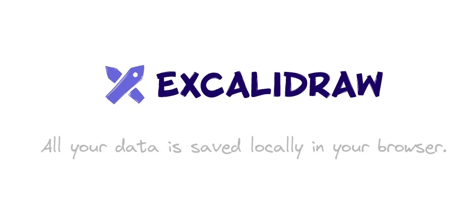

Análise de qualidade do Excalidraw¶

Avaliação de segurança, flexibilidade e capacidade de interação de um quadro branco colaborativo.
Introdução¶
Este site documenta a avaliação da qualidade do Excalidraw, um quadro branco colaborativo para diagramas, esboços e wireframes, feita pela equipe Ada Lovelace na disciplina de Qualidade de Software 1. A avaliação segue a ISO/IEC 25010:2023, que chama de Flexibilidade e Capacidade de interação o que as edições anteriores chamavam de Portabilidade e Usabilidade.
O estudo combina medições objetivas, inspeção técnica e sessões com
participantes, no commit e7b5346. Os resultados valem para a versão, os
ambientes e as funções avaliados, e não são uma certificação do produto.
Características avaliadas¶
-
Segurança
Os diagramas podem conter dados pessoais e circulam por links, salas colaborativas, armazenamento local e IA. A análise considera os princípios da LGPD, sem certificar conformidade legal.
O1 41,7% e O2 13,9%: não atendidos. Notas
-
Flexibilidade
Funcionar em navegadores, sistemas, resoluções e celulares com toque, e migrar diagramas sem perder conteúdo.
O3 66,7%: parcial. O4 75,0%: atendido. Notas
-
Capacidade de interação
Iniciantes aprenderem, experientes trabalharem rápido e pessoas com deficiência operarem por teclado ou leitor de tela.
O5 71,4%: parcial. O6 31,3%: não atendido. Notas
A justificativa da escolha está na priorização, e o que os resultados significam para cada decisão, na conclusão.
Projeto avaliado¶
| Item | Descrição |
|---|---|
| Aplicação | excalidraw.com |
| Repositório | github.com/excalidraw/excalidraw |
| Tipo | Aplicação web de código aberto (MIT), instalável como PWA e distribuída como biblioteca React no npm |
| Uso | Criar, editar, exportar e compartilhar diagramas com mouse, teclado e toque |
O Diagrama 1 resume a estrutura do produto. O editor roda inteiro no navegador e depende de serviços externos só para colaboração, links compartilháveis e IA. Por isso a avaliação observa o que sai do navegador, mas não o que acontece nos servidores.
flowchart LR
U["Usuário<br/>(mouse, teclado e toque)"]
subgraph NAV["Navegador · excalidraw.com"]
APP["excalidraw-app"]
LIB["@excalidraw/excalidraw<br/>(editor React)"]
PKG["element · math · common · utils"]
LOC["localStorage e IndexedDB"]
APP --> LIB --> PKG
APP --> LOC
end
U --> APP
APP --> COL["Servidor de colaboração"]
APP --> FB["Firebase e json.excalidraw.com<br/>(salas e links)"]
APP --> AI["Serviço de IA"]
classDef mod fill:#6965db1f,stroke:#8884ee
classDef ext fill:transparent,stroke:#9a97b8,stroke-dasharray:4 3
class APP,LIB,PKG,LOC mod
class COL,FB,AI extDiagrama 1. Módulos do Excalidraw e serviços externos. Fonte: elaboração própria a partir do repositório do Excalidraw.
Escopo¶
- Dentro: formas, textos, setas e wireframes; mouse, teclado e toque; colaboração e compartilhamento por links; exportação e importação; IA; armazenamento local, autenticação observável e proteção das comunicações; ambientes selecionados.
- Fora: auditoria da infraestrutura de produção, certificação criptográfica, teste de penetração invasivo e avaliação exaustiva de todas as funções.
Integrantes¶
| Nome | GitHub |
|---|---|
| André Henrique | andrehsb |
| Giovanna Felipe | giovannafg |
| João Pedro Lopes | ojplc |
| Luís Cunha | cunha-luiss |
| Renato Araújo | renatoyx |
| Zayra Moraes | Zayra-Moraes |
Organização da documentação¶
-
Caracterização da pesquisa, normas, GQM e priorização das qualidades.
-
Fase de Planejamento
Propósito e partes interessadas, modelo de qualidade, ODS e objetivos GQM.
-
Análise
Roteiro com questões, métricas e critérios; análise dos resultados; melhoria executada; e ameaças e conclusão.
-
Fase de Aplicação
Versão analisada e plano de avaliação: como, com quê e quando cada métrica foi coletada.
-
Valor, nota e evidência de cada uma das 51 métricas.
-
Gestão
Métricas de desenvolvimento, gráficos da Entrega 2, cronograma e estimativa de custos.
-
Normas, métodos, ferramentas e documentação consultados.
-
O que cada integrante usou, para quê e como conferiu o resultado.